기계설계산업기사 (2019-08-04 기출문제)
1과목: 기계가공법 및 안전관리
1. 드릴 머신에서 공작물을 고정하는 방법으로 적합하지 않은 것은?
- 바이스 사용
- 드릴 척 사용
- 박스 지그 사용
- 플레이트 지그 사용
(정답률: 68%)

2. 커터의 지름이 100mm이고, 커터의 날 수가 10개인 정면 밀링 커터로 200mm인 공작물을 1회 절삭할 때 가공시간은 약 몇 초인가? (단, 절삭속도는 100m/min, 1날 당 이송량은 0.1mm이다.)
- 48.4
- 56.4
- 64.4
- 75.4
(정답률: 41%)
3. CNC 선반에서 홈 가공 시 1.5초 동안 공구의 이송을 잠시 정지시키는 지령 방식은?
- G04 Q1500
- G04 P1500
- G04 X1500
- G04 U1500
(정답률: 78%)
4. 절삭가공에서 절삭조건과 거리가 가장 먼 것은?
- 이송속도
- 절삭깊이
- 절삭속도
- 공작기계의 모양
(정답률: 87%)
5. 다음 공작기계 중 공작물이 직선왕복운동을 하는 것은?
- 선반
- 드릴머신
- 플레이너
- 호빙머신
(정답률: 65%)
6. 드릴링 작업 시 안전사항으로 틀린 것은?
- 칩의 비산이 우려되므로 장갑을 착용하고 작업한다.
- 드릴이 회전하는 상태에서 테이블을 조정하지 않는다.
- 드릴링의 시작부분에 드릴이 정확히 자리 잡힐 수 있도록 이송을 느리게 한다.
- 드릴링이 끝나는 부분에서는 공작물과 드릴이 함께 돌지 않도록 이송을 느리게 한다.
(정답률: 84%)
7. 옵티컬 패러렐을 이용하여 외측 마이크 로미터의 평행도를 검사하였더니 백색광에 의한 적색 간섭무늬의 수가 앤빌에서 2개, 스핀들에서 4개였다. 평행도는 약 얼마인가? (단, 측정에서 사용한 빛의 파장은 0.32μm이다.)
- 1μm
- 2μm
- 4μm
- 6μm
(정답률: 36%)
8. 투영기에 의해 측정할 수 있는 것은?
- 각도
- 진원도
- 진직도
- 원주 흔들림
(정답률: 56%)
9. 절삭조건에 대한 설명으로 틀린 것은?
- 칩의 두께가 두꺼워질수록 전단각이 작아진다.
- 구성인선을 방지하기 위해서는 절삭깊이를 적게 한다.
- 절삭속도가 빠르고 경사각이 클 때 유동형 칩이 발생하기 쉽다.
- 절삭하는 공작물을 절삭할 때 가공이 용이한 정도로 절삭비가 1에 가까울수록 절삭성이 나쁘다.
(정답률: 64%)
10. 접시머리나사를 사용할 구멍에 나사머리가 들어갈 부분을 원추형으로 가공하기 위한 드릴가공 방법은?
- 리밍
- 보링
- 카운터 싱킹
- 스폿 페이싱
(정답률: 71%)
11. 연삭숫돌의 성능을 표시하는 5가지 요소에 포함되지 않는 것은?
- 기공
- 입도
- 조직
- 숫돌입자
(정답률: 73%)
12. 일반적인 손 다듬질 가공에 해당되지 않는 것은?
- 줄 가공
- 호닝 가공
- 해머 작업
- 스크레이퍼 작업
(정답률: 76%)
13. 공작물의 단면절삭에 쓰이는 것으로 길이가 짧고 직경이 큰 공작물의 절삭에 사용되는 선반은?
- 모방 선반
- 수직 선반
- 정면 선반
- 터릿 선반
(정답률: 61%)
14. 삼점법에 의한 진원도 측정에 쓰이는 측정기기가 아닌 것은?
- V블록
- 측미기
- 3각 게이지
- 실린더 게이지
(정답률: 54%)
15. 연마제 가공액과 혼합하여 짧은 시간에 매끈해지거나 광택이 적은 다듬질 면을 얻게 되며, 피닝(peening)효과가 있는 가공법은?
- 래핑
- 숏피닝
- 배럴가공
- 액체호닝
(정답률: 56%)
16. 선반의 심압대가 갖추어야 할 구비 조건으로 틀린 것은?
- 센터는 편위 시킬 수 있어야 한다.
- 베드의 안내면을 따라 이동할 수 있어야 한다.
- 베드의 임의위치에서 고정할 수 있어야 한다.
- 심압축은 중공으로 되어 있으며 끝부분은 내셔널 테이퍼로 되어 있어야 한다.
(정답률: 68%)
17. 브로칭 머신의 특징으로 틀린 것은?
- 복잡한 면의 형상도 쉽게 가공할 수 있다.
- 내면 또는 외면의 브로칭 가공도 가능하다.
- 스플라인 기어, 내연기관 크랭크실의 크랭크 베어링부는 가공이 용이하지 않다.
- 공구의 일회 통과로 거친 절삭과 다듬질 절삭을 완료할 수 있다.
(정답률: 59%)
18. 연삭가공 중 발생하는 떨림의 원인으로 가장 관계가 먼 것은?
- 연삭기 자체의 진동이 없을 때
- 숫돌축이 편심 되어 있을 때
- 숫돌의 결합도가 너무 클 때
- 숫돌의 평행상태가 불량할 때
(정답률: 76%)
19. 척을 선반에서 떼어내고 회전센터와 정지센터로 공작물을 양센터에 고정하면 고정력이 약해서 가공이 어렵다. 이 때 주축의 회전력을 공작물에 전달하기 위해 사용하는 부속품은?
- 면판
- 돌리개
- 베어링 센터
- 앵글 플레이트
(정답률: 65%)
20. 지름이 150mm인 밀링커터를 사용하여 30m/min의 절삭속도로 절삭할 때 회전수는 약 몇 rpm인가?
- 14
- 38
- 64
- 72
(정답률: 61%)
2과목: 기계제도
21. 다음과 같이 3각법으로 나타낸 도면에서 정면도와 우측면도를 고려할 때 평면도로 가장 적합한 것은?
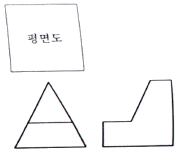
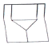
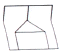
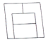
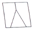
(정답률: 68%)
22. 다음 도면에서 대상물의 형상과 비교하여 치수 기입이 틀린 것은?
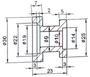
- 7
- ø9
- ø14
- ø30
(정답률: 85%)
23. 그림과 같은 부등변 ㄱ형강의 치수 표시방법은? (단, 형강의 길이는 L이고, 두께는 t로 동일하다.)
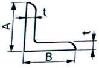
- L A×B×t-L
- L t×A×B×L
- L B×A+2t-L
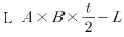
(정답률: 75%)
24. 물체를 단면으로 나타낼 때 길이 방향으로 절단하여 나타내지 않는 부품으로만 짝지어진 것은?
- 핀, 커버
- 브래킷, 강구
- O-링, 하우징
- 원통 롤러, 기어의 이
(정답률: 59%)
25. 표준 스퍼 기어의 모듈이 2이고, 잇수가 35일 때, 이끝원(잇봉우리원)의 지름은 몇 mm로 도시하는가?
- 65
- 70
- 72
- 74
(정답률: 55%)
26. 보기와 같이 정면도와 평면도가 표시될 때 우측면도가 될 수 없는 것은?
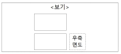
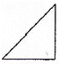
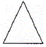
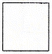
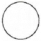
(정답률: 74%)
27. 가공 방법의 기호 중 호닝(Honing) 가공 기호는?
- GB
- GH
- HG
- GSP
(정답률: 67%)
28. 다음과 같은 리벳의 호칭법으로 옳은 것은? (단, 재질은 SV330이다.)
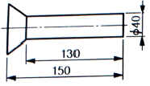
- 납작 머리 리벳 40×130 SV330
- 납작 머리 리벳 40×150 SV330
- 접시 머리 리벳 40×130 SV330
- 접시 머리 리벳 40×150 SV330
(정답률: 67%)
29. 다음 중 온 흔들림 기하공차의 기하는?
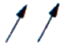
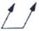
(정답률: 72%)
30. KS 재료기호 중 'SS235'에서 ‘235’의 의미는?
- 경도
- 종별 번호
- 탄소 함유량
- 최저 항복 강도
(정답률: 65%)
31. 치수가
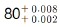
일 경우 위치수 허용차는?- 0.002
- 0.006
- 0.008
- 0.010
(정답률: 69%)
32. 나사 제도에 대한 설명으로 틀린 것은?
- 나사부의 길이 경계가 보이는 경우는 그 경계를 굵은 실선으로 나타낸다.
- 숨겨진 암나사를 표시할 경우 나사산의 봉우리와 골 밑은 모두 가는 파선으로 나타낸다.
- 수나사를 측면에서 볼 경우 나사산의 봉우리는 굵은 실선, 나사의 골 밑은 가는 실선으로 표시한다.
- 나사의 끝면에서 본 그림에서 나사의 골밑은 굵은 실선으로 그린 원주의 3/4에 거의 같은 원의 일부로 나타낸다.
(정답률: 50%)
33. 허용한계 치수기입이 틀린 것은?
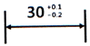
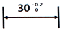
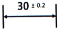
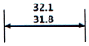
(정답률: 69%)
34. 그림과 같은 용접기호의 의미는?
- 현장용접 표시이다.
- 양쪽용접 표시이다.
- 용접 시작점 표시이다.
- 전체둘레 용접 표시이다.
(정답률: 76%)
35. 축의 중심에 센터구멍을 표현하는 방법으로 틀린 것은?
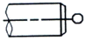
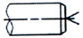
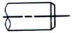
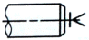
(정답률: 62%)
36. 다음 기계 재료 중 기계 구조용 탄소 강재에 해당하는 것은?
- SS235
- SCr410
- SM40C
- SCS55
(정답률: 78%)
37. 다음 중 주어진 평면도와 우측면도를 보고 누락된 정면도로 가장 적합한 것은?
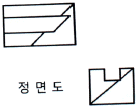
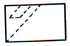
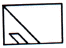
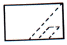
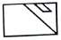
(정답률: 67%)
38. 다음 그림과 같은 도형일 때 기하학적으로 정확한 도형을 기준으로 설정하고 여기에서 벗어나는 어긋남의 크기를 대상으로 하는 기하공차는?
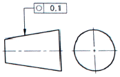
- 대칭도
- 윤곽도
- 진원도
- 평면도
(정답률: 80%)
39. 기하공차의 표현이 틀린 것은? (문제 오류로 가답안 발표시 1번으로 발표되었지만 확정답안 발표시 1, 4번이 정답처리 되었습니다. 여기서는 가답안인 1번을 누르면 정답 처리 됩니다.)
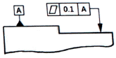
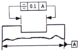
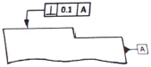
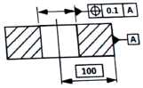
(정답률: 76%)
40. 다음과 같이 도시된 도면에서 치수 A에 들어갈 치수 기입으로 옳은 것은?
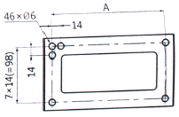
- 7×7(=49)
- 15×14=(210)
- 16×14(=224)
- 17×14(=238)
(정답률: 61%)
3과목: 기계설계 및 기계재료
41. 다음 조직 중 2상 혼합물은?
- 펄라이트
- 시멘타이트
- 페라이트
- 오스테나이트
(정답률: 49%)
42. 티타늄 합금의 일반적인 성질에 대한 설명으로 틀린 것은?
- 열팽창계수가 작다.
- 전기저항이 높다.
- 비강도가 낮다.
- 내식성이 우수하다.
(정답률: 64%)
43. 다음 금속재료 중 인장강도가 가장 낮은 것은?
- 백심가단주철
- 구상흑연주철
- 회주철
- 주강
(정답률: 54%)
44. 초경합금에 관한 사항으로 틀린 것은?(오류 신고가 접수된 문제입니다. 반드시 정답과 해설을 확인하시기 바랍니다.)
- WC분말에 Co분말을 890℃에서 가열 소결시킨 것이다.
- 내마모성이 아주 크다.
- 인성, 내충격성 등을 요구하는 곳에는 부적합하다.
- 전단, 인발, 압출 등의 금형에 사용된다.
(정답률: 43%)
45. 표준상태의 탄소강에서 탄소의 함유량이 증가함에 따라 증가하는 성질로 짝지어진 것은?
- 비열, 전기저항, 항복점
- 비중, 열팽창계수, 열전도도
- 내식성, 열팽창계수, 비열
- 전기저항, 연신율, 열전도도
(정답률: 49%)
46. 담금질한 강재의 잔류 오스테나이트를 제거하며, 치수변화 등을 방지하는 목적으로 0℃ 이하에서 열처리하는 방법은?
- 저온뜨임
- 심랭처리
- 마템퍼링
- 용체화처리
(정답률: 74%)
47. 다음 중 온도변화에 따른 탄성계수의 변화가 미세하여 고급시계, 정밀저울의 스프링에 사용되는 것은?
- 인코넬
- 엘린바
- 니크롬
- 실리콘브론즈
(정답률: 67%)
48. Fe-Mn, Fe-Si으로 탈산시켜 상부에 작은 수축관과 소수의 기포만이 존재하며 탄소 함유량이 0.15~0.3% 정도인 강은?
- 킬드강
- 캡드강
- 림드강
- 세미킬드강
(정답률: 57%)
49. 다음 중 뜨임의 목적과 가장 거리가 먼 것은?
- 인성 부여
- 내마모성의 향상
- 탄화물의 고용강화
- 담금질할 때 생긴 내부응력 감소
(정답률: 55%)
50. 다음 중 피로 수명이 높으며 금속 스프링과 같은 탄성을 가지는 수지는?
- PE
- PC
- PS
- POM
(정답률: 49%)
51. 스퍼 기어에서 이의 크기를 나타내는 방법이 아닌 것은?
- 모듈로서 나타낸다.
- 전위량으로 나타낸다.
- 지름 피치로 나타낸다.
- 원주 피치로 나타낸다.
(정답률: 64%)
52. 회전수 600rpm, 베어링하중 18kN의 하중을 받는 레이디얼 저널 베어링의 지름은 약 몇 mm인가? (단, 이때 작용하는 베어링압력은 1N/mm2, 저널의 폭(ℓ)과 지름(d)의 비 ℓ/d=2.0으로 한다.)
- 80
- 85
- 90
- 95
(정답률: 23%)
53. 재료의 기준강도(인장강도)가 400N/mm2이고, 허용응력이 100N/mm2일 때, 안전율은?
- 0.2
- 1.0
- 4.0
- 16.0
(정답률: 75%)
54. 다음 중 용접법을 분류할 경우 용접부의 형상에 따라 구분한 것은?
- 가스 용접
- 필릿 용접
- 아크 용접
- 플라스마 용접
(정답률: 71%)
55. V벨트의 회전 속도가 30m/s, 벨트의 단위 길이당 질량이 0.15kg/m, 긴장측의 장력이 196N일 경우, 벨트의 회전력(유효장력)은 약 N인가? (단. 벨트의 장력비는
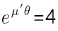
이다.)- 20.21
- 34.84
- 45.75
- 56.55
(정답률: 32%)
56. 핀 전체가 두 갈래로 되어있어 너트의 물림 방지나 핀이 빠져 나오지 않게 하는데 허용되는 핀은?
- 너클 핀
- 분할 핀
- 평행 핀
- 테이터 핀
(정답률: 72%)
57. 150rpm으로 5kW의 동력을 전달하는 중 실축의 지름은 약 몇 mm 이상이어야 하는가? (단, 축 재료의 허용전단응력은 19.6MPa이다.)
- 36
- 40
- 44
- 48
(정답률: 36%)
58. 하중이 W[N]일 때 변위량을 δ[mm]라 하면 스프링 상수 k[N/mm]는?
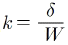
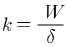
- k=δ×W
- k=W-δ
(정답률: 70%)
59. 다음 ()안에 들어갈 내용으로 옳은 것은?
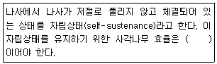
- 50% 이상
- 50% 미만
- 25% 이상
- 25% 미만
(정답률: 53%)
60. 폴(pawl)과 결합하여 사용되며, 한쪽 방향으로는 간헐적인 회전운동을 주고 반대쪽으로는 회전을 방지하는 역할을 하는 장치는?
- 플라이 휠(fly wheel)
- 래칫 휠(rachet wheel)
- 블록 브레이크(block brake)
- 드럼 브레이크(drum brake)
(정답률: 66%)
4과목: 컴퓨터응용설계
61. 곡면(Surface) 모델링 기법에 관한 설명으로 틀린 것은?
- 곡면 모델링 시스템은 와이어프레임 모델에 면 정보를 추가한 형태이다.
- 곡면을 이루는 각 면들의 곡면 방정식이 데이터베이스 내에 추가로 저장된다.
- 곡면과 곡면의 인접한 정보는 Solid 모델에서 다루는 정보이며 Surface 모델에서는 다루지 않는다.
- 금형가공을 위한 NC 공구 경로 계산 프로그램에서 가공격면의 형상을 제공하는데 사용될 수 있다.
(정답률: 68%)
62. 서로 다른 CAD/CAM 프로그램 간의 데이터를 상호 교환하기 위한 데이터 표준이 아닌 것은?
- PHIGS
- DIN
- DXF
- STEP
(정답률: 59%)
63. IGES 파일의 구분에 해당하지 않는 것은?
- Start Section
- Local Section
- Directory Entry Section
- Parameter Data Section
(정답률: 59%)
64. CAD시스템의 출력장치로 볼 수 없는 것은?
- 플로터(Plotter)
- 프린터(Printer)
- 라이트 팬(Light Pen)
- 래피트 프로토타이핑(Rapid Prototyping)
(정답률: 75%)
65. 제품이 수정되어 최적화될 수 있도록, 제품이 어떻게 작동할지를 모의실험하고 연구하는데 컴퓨터를 활용하는 기술은?
- CAD(Computer-aided Design)
- CAM(Computer-aided Manufacturing)
- CAI(Computer-aided Inspection)
- CAE(Computer-aided Engineering)
(정답률: 57%)
66. 그림과 같이 2개의 경계곡선(위 그림)에 의해서 하나의 곡면(아래 그림)을 구성하는 기능을 무엇이라고 하는가?
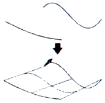
- revolution
- twist
- loft
- extrude
(정답률: 63%)
67. 3차원 형상의 솔리드 모델링에서 B-rep(Boundary representation)과 비교한 CSG(Constructive Solid Geometry)의 상대적인 특징으로 틀린 것은?
- 데이터의 구조가 간단하다.
- 데이터의 수정이 용이하다.
- 전개도의 작성이 용이하다.
- 메모리의 용량이 소용량이다.
(정답률: 49%)
68. 곡선의 양 끝점을 P0과 P1, 양 끝점에서의 접선 벡터를 P0과 P'1이라고 할 때, 아래와 같은 식으로 표현되는 곡선(P(u))은?
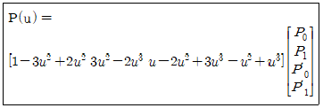
- Bezier 곡선
- B-spline 곡선
- Hermite 곡선
- NURBS 곡선
(정답률: 42%)
69. (x, y) 평면 좌표계에서 두 점 P1(x1, y1), P2(x2, y2)를 알고 있을 때 두 점을 지나는 직선의 방정식을 바르게 표현한 것은?
- (x2-x1)(y-y1)=(y2-y1)(x-x1)
- (y2x1)(y-y2)=(x2-y1)(y-x1)
- (x-y2)(y1-x2)=(x2-y1)(y-x1)
- (x2-x1)(x-x1)=(y2-y1)(y-y1)
(정답률: 44%)
70. B-spline 곡선의 특징으로 틀린 것은?
- 하나의 꼭지점을 움직여도 이웃하는 단위 곡선과의 연속성이 보장된다.
- 1개의 장점 변화는 곡선 전체에 영향을 준다.
- 다각형에 따른 형상 예측이 가능하다.
- 곡선상의 점 몇 개를 알고 있으면 B-spline 곡선을 쉽게 알 수 있다.
(정답률: 50%)
71. R(빨강), G(초록), B(파랑) 계열의 색상에 각각 4bit씩 할당된 총 12bit plane을 사용하는 그래픽장치에서 동시에 표시할 수 있는 색깔의 개수는 얼마인가?
- 512
- 1024
- 2048
- 4096
(정답률: 54%)
72. 다음 중 NURBS 곡선의 방정식으로 옳은 것은? (단,
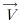
는 조정점, hi는 동차 좌표, Ni, k는 블렌딩 함수를 각각 의미한다.)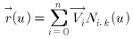
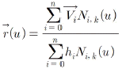
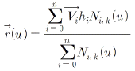
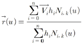
(정답률: 30%)
73. 3차원 공간상에서 세 점 r0(x0, y0, z0), r1(x1, y1, z1), r2(x2, y2, z2)를 지나는 평면의 방정식(r(x, y, z))을 나타내는 식으로 옳은 것은?
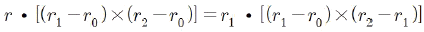
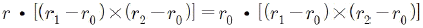
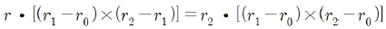
(정답률: 42%)
74. 특징 형상 모델링(Feature-based Modeling)의 특징으로 거리가 먼 것은?
- 기본적인 형상 구성 요소와 형상 단위에 관한 정보를 함께 포함하고 있다.
- 전형적인 특징 형상으로 모떼기(chamfer), 구멍(hole), 슬롯(slot) 등이 있다.
- 특징 형상 모델링 기법을 응용하여 모델로부터 공정 계획을 자동으로 생성시킬 수 있다.
- 주로 트위킹(tweaking) 기능을 이용하여 모델링을 수행한다.
(정답률: 55%)
75. CAD 소프트웨어에서 형상 모델러가 하는 가장 기본적인 역할은?(오류 신고가 접수된 문제입니다. 반드시 정답과 해설을 확인하시기 바랍니다.)
- 컴퓨터 내에 저장되어 있는 형상정도를 인쇄하는 기능
- 물체의 기하학적인 형상을 컴퓨터 내에서 표현하는 기능
- 물체의 3차원 위상정보를 컴퓨터에 입력하는 기능
- 컴퓨터 내에 저장되어 있는 형상을 다른 소프트웨어로 보내는 기능
(정답률: 72%)
76. 다음 중 솔리드 모델링 시스템에서 사용하는 일반적인 기본형상(Primitive)이 아닌 것은?
- 곡면
- 실린더
- 구
- 원추
(정답률: 48%)
77. 2차원 변환 행렬이 다음과 같을 때 좌표변환 H는 무엇을 의미하는가?
- 확대
- 회전
- 이동
- 반사
(정답률: 52%)
78. 솔리드 모델을 나타내는데 있어서 분해모델(decomposition model)을 나타내는 표현 방법에 속하지 않는 것은?
- 복셀 표현(voxel representation)
- 옥트리 표현(Octree representation)
- 날개 모서리 자료 표현(Winged-edge representation)
- 세포 표현(cell representation)
(정답률: 57%)
79. 이진법 1011을 십진법으로 계산하면 얼마인가?
- 2
- 4
- 8
- 11
(정답률: 69%)
80. 기존에 만들어진 제품의 도면이 없는 경우, 실제 제품의 크기와 형상 자료를 얻는데 편리한 입력장치는?
- 3차원 측정기
- 비트 플레인
- 태블릿(tablet)
- 스타일러스 펜(stylus pen)
(정답률: 71%)